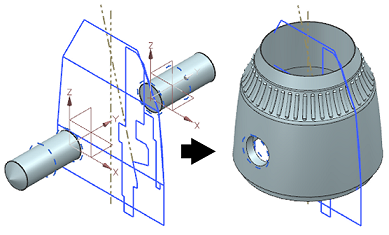

Positive Hole enhancement
What is it?
You can create “positive” holes without having to specify target bodies for them. This can be useful when the target body has not yet been specified or is not present in the part, but your hole templates are ready.
Positive holes are solid bodies, and are created from the Hole dialog box using None for the Boolean and Along Vector for the hole direction.

Positive holes can include symbolic (internal) threads, which will later update correctly when a target solid body is available and specified for the hole and the Boolean is changed to Subtract.
Why should I use it?
Use this capability to create holes and threads in a part, before the intended target body has been specified. It is also useful when you migrate data from other CAD systems using CMM and you need to include positive type holes in the conversion.
Where do I find it?
|
Application |
Modeling, Shape Studio, and NX Sheet Metal |
|
Toolbar |
Feature→Hole |
|
Menu |
Insert→Design Feature→Hole |
|
Location in dialog box |
Direction group→Hole Direction list→Along Vector Boolean group→Boolean list→None |